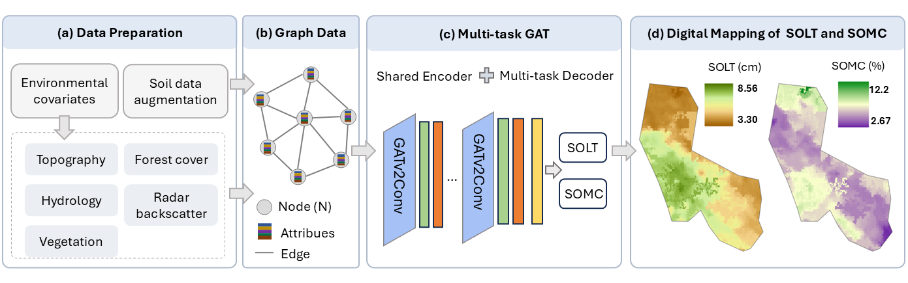
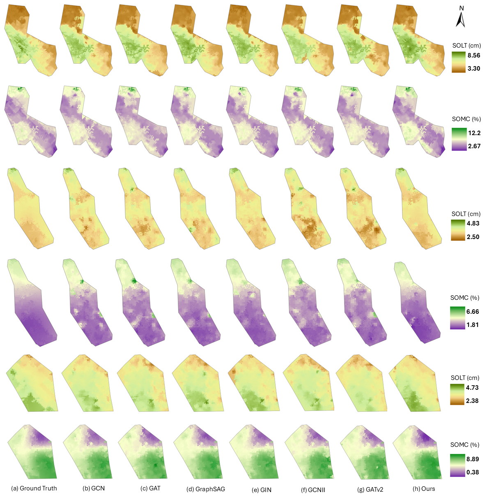

Multi-source remote sensing
Environmental covariates from airborne LiDAR, multispectral aerial imagery, Sentinel-1 SAR, and Sentinel-2 MSI support forest soil mapping.
Joint digital mapping of soil organic layer thickness (SOLT) and soil organic matter (SOM) in boreal forests.
This study introduces MT-GAT , a multi-task graph attention network that jointly predicts soil organic layer thickness (SOLT) and soil organic matter (SOM) in boreal forests. To model the spatial relationships of soil properties, we integrate 19 environmental covariates derived from airborne LiDAR, airborne multispectral orthoimagery, Sentinel-1 SAR, and Sentinel-2 multispectral imagery.
Forest polygons delineated using tree-species maps are represented as graph nodes. A shared graph attention encoder learns from environmental covariates and multi-scale spatial context, while task-specific decoders jointly estimate SOLT and SOM. The framework is evaluated using soil samples from 38 boreal forest sites , supporting spatially informed digital soil mapping and forest management applications.
Environmental covariates from airborne LiDAR, multispectral aerial imagery, Sentinel-1 SAR, and Sentinel-2 MSI support forest soil mapping.
Tree-species-based polygons are organized as graph nodes, allowing a shared GAT encoder to learn spatial autocorrelation and multi-scale context.
Multi-task decoders exploit relationships between the two soil properties while separating task-specific signals to reduce negative transfer.
Multi-source remote sensing data are processed into environmental covariates and linked to forest polygons. MT-GAT then combines a shared graph attention encoder with task-specific prediction heads for SOLT and SOM.

assets/figures/Overallworkflow.png
.
Evaluation using samples from 38 boreal forest sites and 19 environmental covariates demonstrates strong predictive performance for both soil organic properties. Compared with single-task models, the multi-task framework leverages relationships between soil organic properties to improve predictive performance.

assets/figures/result.png
.
Potential next steps include extending MT-GAT to additional soil properties and evaluating its transferability across forests and environmental conditions.
Zhu Mao, Omid Abdi, Ville Laamanen, Veli-Pekka Kivinen, and Jori Uusitalo
Preprint available on SSRN (2026). DOI: 10.2139/ssrn.7287455